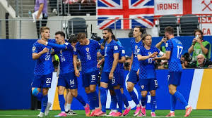

Napeta završnica utakmice odlučila pobjednika u posljednjim minutama

Publika je pratila vrlo izjednačen dvoboj u kojem je konačan rezultat odlučen tek u samoj završnici susreta.
Obje ekipe ušle su u utakmicu vrlo motivirano i od početka pokazale želju za nadigravanjem. Već u prvom poluvremenu stvoreno je nekoliko ozbiljnih prilika, ali su obrane bile na visokoj razini.
U nastavku susreta tempo igre dodatno je porastao. Momčadi su češće riskirale u napadu, što je otvorilo više prostora i dovelo do atraktivnijeg nogometa pred gledateljima.
Ključni trenutak dogodio se nekoliko minuta prije kraja kada je jedna dobro organizirana akcija završila preciznim udarcem. Taj pogodak pokazao se odlučujućim za konačan ishod.
Trener pobjedničke momčadi nakon susreta istaknuo je kako je momčad pokazala karakter i disciplinu. S druge strane, poraženi su naglasili da će iz ovakvog susreta pokušati izvući pouke za nastavak sezone.